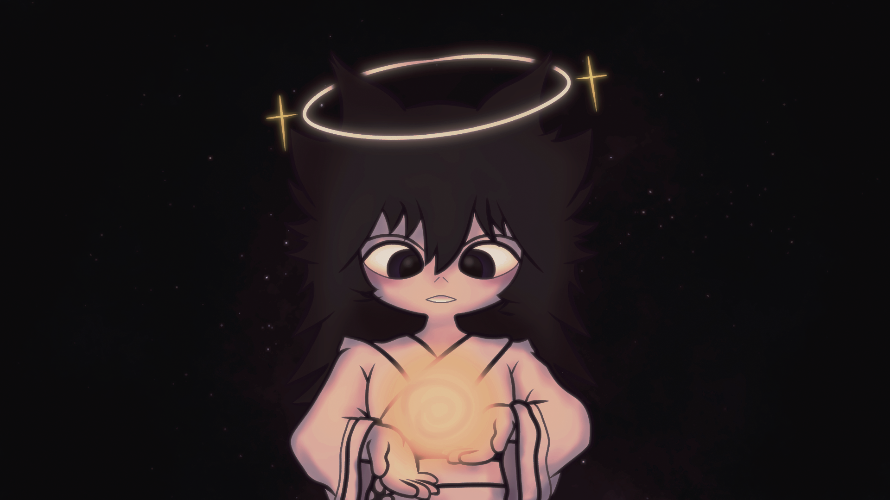
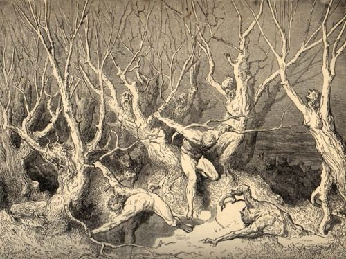

“Tu és a obra mais preciosa dentre todas as que brotaram de Meu sopro eterno.”
Não pelo mero labor de Minhas mãos foste moldada, mas porque em ti hei de derramar mais que existência vulgar. Em ti haverá luz, em ti haverá júbilo, em ti haverá abundância, e em ti resplandecerá o Meu Espírito.
Por sobre a terra e sob os céus encontrarás toda sorte de criaturas que são Minhas.
Peregrinarás, contemplarás, guardarás e sustentarás.
Hás de contemplar o bem, e hás de testemunhar o mal.
E haverá diante de ti uma irmã rival, que em eterno rancor te odiará, e buscará acender em ti a chama da corrupção. E quando a encontrares, junto dela deves permanecer por todos os dias do tempo, até o fim que não tem fim.
Todavia, acima de todo ódio e de toda provação, jamais te será lícito cessar de amar. Amarás a ela, amarás a criação inteira, amarás cada ser que respira do sopro que Eu mesmo insuflei.
Não importa o que teus olhos vejam, nem o que tuas mãos sofram. Não importa o peso das trevas ou o dardo do inimigo. Amarás ainda. Abraçarás ainda. Serás centelha de esperança onde não houver chama.
Pois todos são teus filhos, ó Laetitia.
Sê, pois, amor. Sê mãe.
Sê luz.

